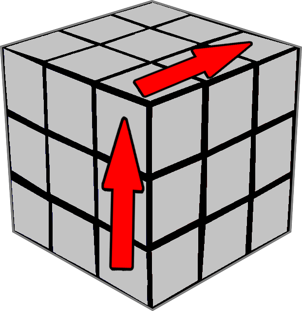
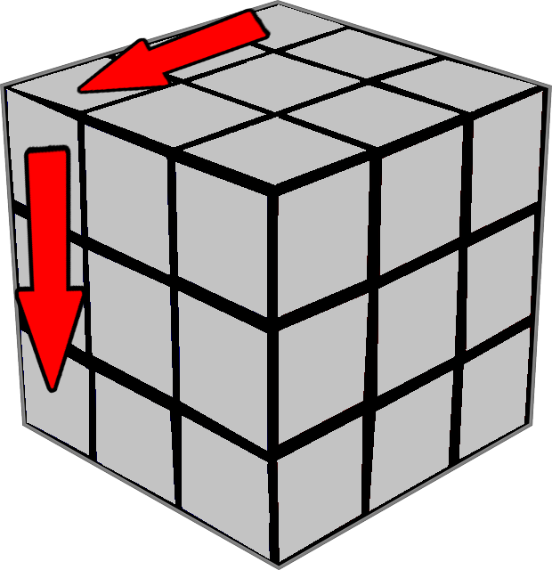
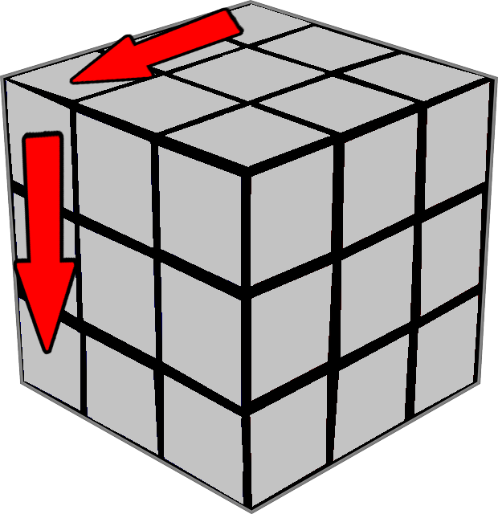
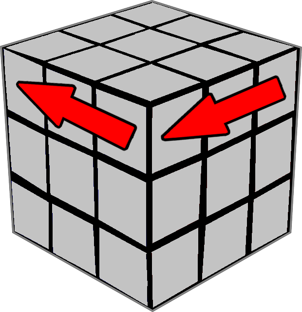
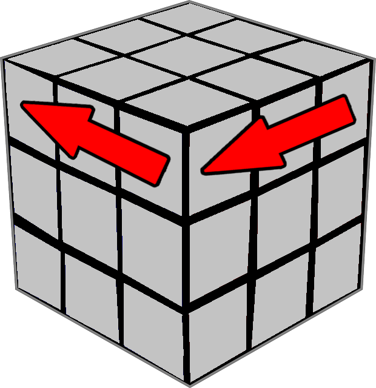
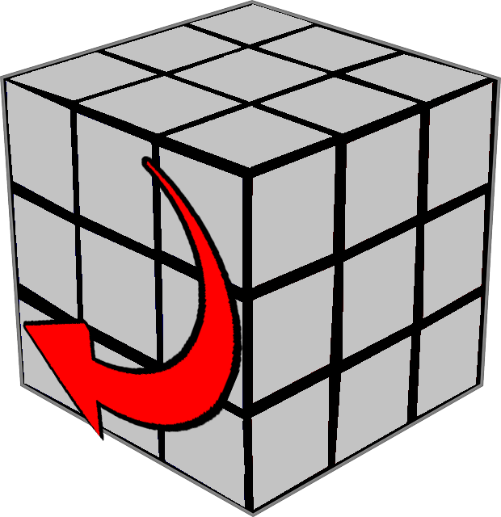
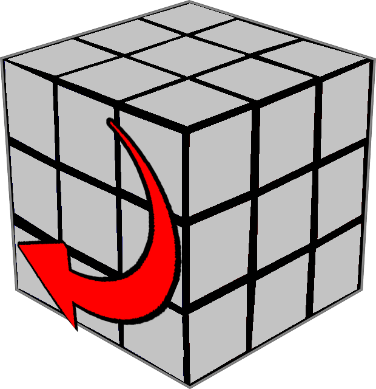
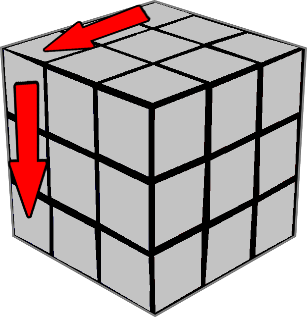
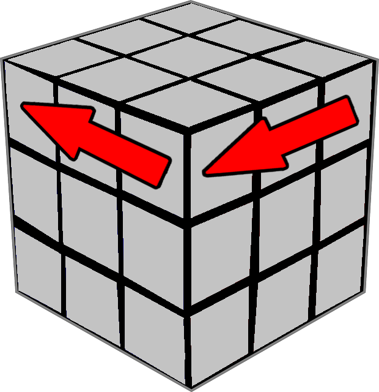
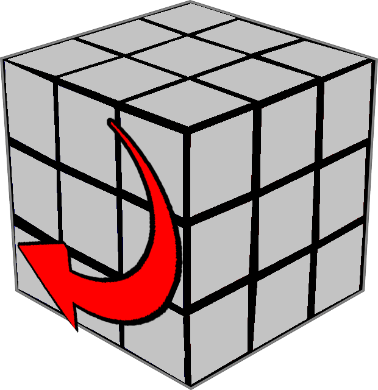

Algorytmy i notacje
Notacja to zapis pojedyńczego ruchu jedną literą. Upraszcza zapis algorytmów
Algorytm to sekwencja ruchów pozwalający uzykać dany efekt
Dla lepszego zapamiętania dobrze jest przerysować poniższe ryskunki wraz z notacją
Dodanie do znaku ' oznacza ruch przeciwny
Warto zwrócić uwagę, iż często pojawiają się błędy z powodu wykonania jednego błędnego ruchu w algorytmie lub obracania kostki (czyli zmienianie koloru centra względem siebie) podczas algorytmu!!!

 

 

 


- R
R' -

- L
L' -

- U
U' -

- F
F' -